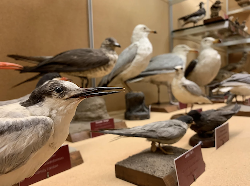

- Jeffy B
- Tiny Public Revelation
Tiny Public Revelation from Piper Hill on Vimeo.
___
___
- One Big Water Song (2019)
A fantasia for voice and 8-channel live electronics. (TIMARA Junior Recital)
- For the Birds (2019)

An installation in a hallway of Oberlin College's Science Center. (TIMARA Senior Recital)
- 2-Dimensional Friends & Sonaforms Demo (2019)
Character and sound design sketches for a proof-of-concept sensory-friendly VR experience. A collaboration with Jas Brooks..
- Taiko, TIMARA, Tokyo (2018)
___
___
___
After receiving grants from XARTS, the Taymor Fund, and Shansi (grants available through Oberlin College and Conservatory), my collaborator Will FK Tokunaga and I traveled to Tokyo, where we studied with the Amanojaku taiko ensemble. We composed a piece for 1 real Chuudaiko and 1 virtual Chuudaiko with live effects that I created using Max and controlled using Wii-remotes. Reach out if you'd like to see the patch! Below is a video of some of the performance.
- "Early Memories" for Sourgum (2018)
I asked each member of Sourgum to send me a text message with the earliest memory they were comfortable sharing. I then set all those text messages into a song that we sang together! (Maxwell Addae, Neal Baker, Helen Hé, Piper Hill, Will FK Tokunaga, Kari Watson)
- Hilma af Klint Suite for Sourgum (2019)
A suite of vocal movements for 6 singers inspired by Hilma af Klint's Paintings for the Temple. Paintings are shown in a slideshow as the piece progresses, as each painting has a corresponding section in the piece. Singers: Maxwell Addae, Neal Baker, Helen Hé, Piper Hill, Will FK Tokunaga, Kari Watson. (audio from a performance of the first 2 movements)
- Wind Over Water (2019)
A quartet written for and premiered during the International Music Festival of the Adriatic in Duino, Italy. This piece is based on excerpts from Arthur S. Eddington's 1927 lectures on “The Nature of the Physical World”.
- "Lament" by The Pipers (2019)
A collaboration with Zeb Page, bagpiper and professor of Geology, this duet for bagpipes and live electronics was written for the Kaliedosonic festival. Using the ambisonics plugin for Max, high resonant frequencies of the bagpipe piece were projected in varying orbits around Finney Chapel's 20-speaker array.
___
___
___
.
.
.